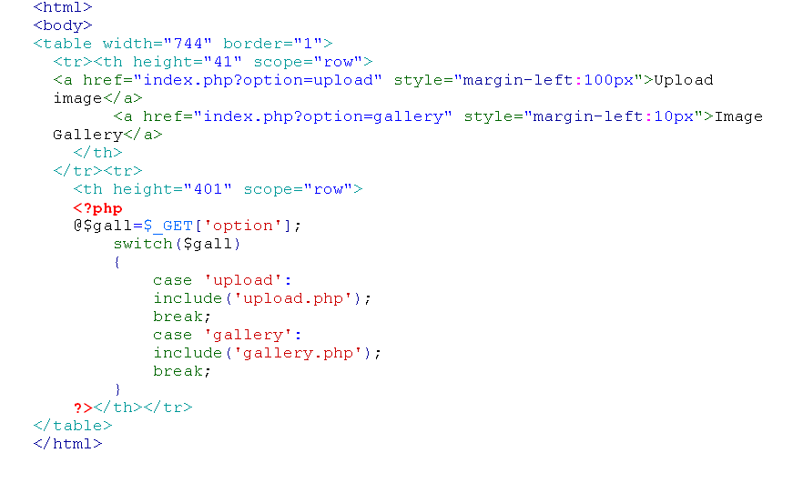

PhP
PHP: Hypertext Preprocessor (or simply PHP) is a general-purpose programming language originally designed for web development. It was originally created by Rasmus Lerdorf in 1994; the PHP reference implementation is now produced by The PHP Group.[6] PHP originally stood for Personal Home Page, but it now stands for the recursive initialism PHP: Hypertext Preprocessor.
PHP code may be executed with a command line interface (CLI), embedded into HTML code, or it can be used in combination with various web template systems, web content management systems, and web frameworks. PHP code is usually processed by a PHP interpreter implemented as a module in a web server or as a Common Gateway Interface (CGI) executable. The web server combines the results of the interpreted and executed PHP code, which may be any type of data, including images, with the generated web page. PHP can be used for many programming tasks outside of the web context, such as standalone graphical applications and robotic drone control.